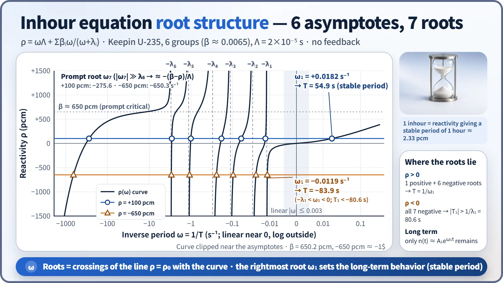
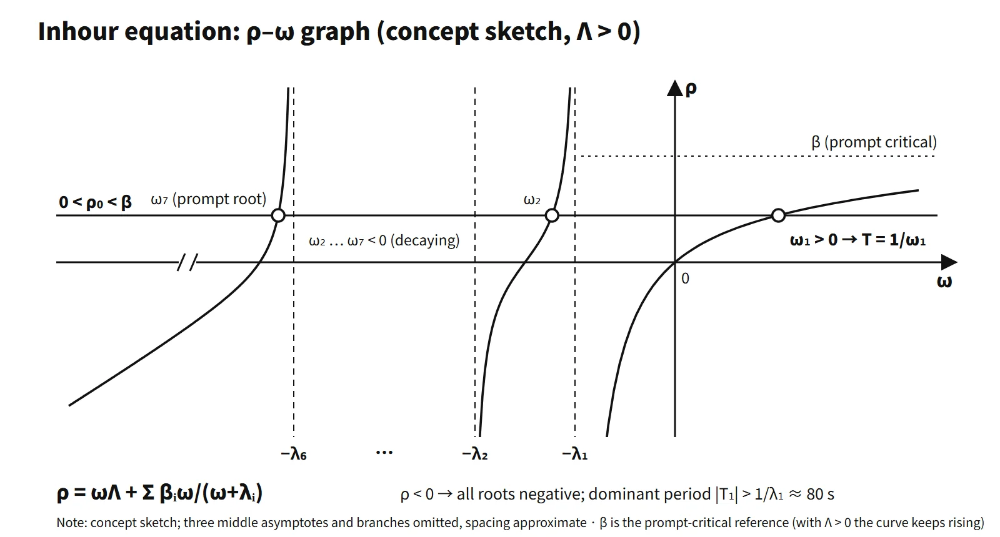

Reactor Physics & Kinetics · C-RX-024
Inhour Equation — One of Seven Roots Sets the Stable Period
How an exponential solution of point kinetics turns reactivity into a stable period, and why only the largest of seven roots survives.
The inhour equation is the relation between the inserted reactivity ρ and the inverse period ω = 1/T, obtained by substituting an exponential solution n ∝ eωt into the point kinetics equations: ρ = ωΛ + Σβiω/(ω+λi). With six delayed groups it is a seventh-degree equation in ω with seven roots; for positive reactivity a single positive root ω1 survives and sets the stable period T = 1/ω1.
Principle and mechanism
A first line for an exam answer can simply be: "the reactivity–inverse-period relation obtained from the exponential-solution condition of the point kinetics equations; the largest root determines the stable period".
It follows directly from point kinetics
For constant reactivity and no feedback, the point kinetics equations are:
- dn/dt = [(ρ−β)/Λ]n + Σλici
- dci/dt = (βi/Λ)n − λici (i = 1–6)
Setting n = n̂eωt and ci = ĉieωt, the second equation gives ĉi = βin̂/[Λ(ω+λi)]. Substituting into the first and using β − Σλiβi/(ω+λi) = Σβiω/(ω+λi) yields the inhour equation:
ρ = ωΛ + Σi βiω/(ω+λi)
Within the point kinetics assumptions it is exact, not an approximation. Textbooks that use the prompt neutron lifetime ℓp (Lamarsh) write ρ = ωℓp/(1+ωℓp) + [1/(1+ωℓp)]Σβiω/(ω+λi); substituting Λ = ℓp/k and ρ = (k−1)/k gives the same equation. Written in terms of the period, ρ ≈ ℓp/T + Σβi/(1+λiT).
Physical meaning of each parameter (2017 exam, session 1, Q2)
| Parameter | Meaning | Role in the equation |
|---|---|---|
| ρ | Inserted reactivity (input) | Left-hand side; height of the horizontal line |
| ω = 1/T | Inverse period, rate of power rise (s⁻¹) | The unknown |
| Λ | Prompt neutron generation time (about 2×10⁻⁵ s) | Prompt term ωΛ; sets the speed above prompt critical |
| βi | Delayed neutron fraction of group i (Σ = 0.0065) | Weight of the delayed terms; 1$ = β |
| λi | Precursor decay constant of group i (0.0124–3.01 s⁻¹) | Position of the asymptotes; time scale of the delayed terms |
At small ω the delayed term Σβiω/λi is large and "absorbs" most of the reactivity, which is why the period becomes long.
Seven roots, one survivor
Multiplying out all denominators gives a seventh-degree polynomial in ω. The curve ρ(ω) consists of seven branches separated at ω = −λi, and because the derivative dρ/dω = Λ + Σβiλi/(ω+λi)² is always positive, each branch increases monotonically. Each branch runs from −∞ to +∞, so the horizontal line ρ = ρ0 crosses every branch exactly once and all seven roots are real. They are ordered ω7 < −λ6 < ω6 < … < ω2 < −λ1 < ω1.
- ρ > 0: only ω1 is positive; the other six are negative. In the solution n(t)/n0 = ΣAjeωjt the negative terms decay, so at long times n(t) ≈ A1eω1t, and T = 1/ω1 is the stable period.
- ρ < 0: all seven roots are negative, and ω1 lies between −λ1 and 0. The negative stable period is therefore T1 < −80.6 s, i.e. |T1| > 1/λ1 = 80.6 s (ρ = −0.01 → −82.6 s; −0.1 → −80.8 s). This is a property of the long-term dominant mode at constant reactivity without an external neutron source; it does not limit the speed of the prompt drop right after shutdown.
- Leftmost root ω7: when |ω7| ≫ λ6, ω7 ≈ −(β−ρ)/Λ. It is a prompt transient term that dies out within a few ms and produces the prompt jump and prompt drop.
Solving for ρ = +0.001 (+100 pcm) with the Keepin U-235 six-group data (β = 0.006502) and Λ = 2×10⁻⁵ s, and computing the amplitudes for a step insertion from critical equilibrium, gives:
| j | ωj (s⁻¹) | 1/ωj | Aj |
|---|---|---|---|
| 1 | +0.0182 | +54.9 s | +1.447 |
| 2 | −0.0136 | −73.6 s | −0.036 |
| 3 | −0.0598 | −16.7 s | −0.139 |
| 4 | −0.183 | −5.45 s | −0.064 |
| 5 | −1.006 | −0.99 s | −0.020 |
| 6 | −2.880 | −0.35 s | −0.007 |
| 7 | −275.6 | −3.6 ms | −0.181 |
A7 ≈ −ρ/(β−ρ), and the sum A1–A6 = 1.18 equals the post-prompt-jump value β/(β−ρ). A1 = 1.447 exceeds 1 because it is the intercept obtained by extrapolating the stable exponential line back to t = 0. For −650 pcm (about −1$) the roots are −0.0119, −0.0249, −0.0950, −0.242, −1.078, −2.950 and −650.3 s⁻¹, all negative, and T1 = −83.9 s.

Approximations and where they apply
| Approximation | Formula | Comparison at ρ = 0.001 |
|---|---|---|
| Exact (6 groups) | Largest root of the seventh-degree equation | 54.9 s |
| Very small ρ | T ≈ (Λ + Σβi/λi)/ρ = ℓ̄/ρ | 84.8 s (at ρ = 10⁻⁴: 848 vs 813 s) |
| One group, Λ neglected | T ≈ (β−ρ)/(λρ) | λ = 0.08 → 68.8 s |
| Prompt supercritical (ρ well above β) | T ≈ Λ/(ρ−β) | — |
| Prompt only | T ≈ Λ/ρ | 0.020 s |
The one-group inhour equation ρ = ωΛ + βω/(ω+λ) is quadratic and has two roots (stable + prompt transient). Most exam calculations use one group, but remember that the result is sensitive to the choice of λ.
Calculation: 2021 exam, session 3, Q6
ρ = 0.002, β = 0.0065, λ = 0.08 s⁻¹, ℓp = 2×10⁻⁵ s.
- One-group equation ℓpω² + (ℓpλ + β − ρ)ω − ρλ = 0 → ω1 = 0.03554 s⁻¹, T = 28.1 s (matches the Λ-neglected approximation (β−ρ)/(λρ) = 28.1 s); the other root, −225 s⁻¹, is a 4.4 ms prompt transient.
- Delayed neutrons ignored: T = ℓp/ρ = 0.010 s, a difference of about 2,800 times.
- For reference, the six-group Keepin constants give 17.3 s.
Calculation: 2008 exam, session 4, Q5
The conditions recovered from the equation objects in the original paper are ℓp = 1.0×10⁻⁴ s, β = 0.006 and λ = 0.0125 s⁻¹. The power history is: A (0–5 min) constant → B (5–10 min) rises by a factor of 1,000 → C (10–15 min) constant → D (15–25 min) falls to 1/1,000.
- A and C: T = ∞, ρ = 0, keff = 1
- B: T = 300/ln1000 = 43.4 s → ρ = ℓp/T + β/(1+λT) = 0.00389, keff = 1/(1−ρ) = 1.0039
- D: T = −600/ln1000 = −86.9 s → 1 + λT = −0.086 → ρ = −0.070, keff = 0.935
The reactivity for D comes out large (12 times β) because the one-group equation diverges at T = −1/λ = −80 s. Solving the same periods with six groups gives about 0.0012 for B and about −0.0039 for D, so in an answer, calculate with the given conditions and add one line noting that "the one-group result is sensitive to the choice of λ".
Where the name "inhour" comes from
"Inhour" is short for "inverse hour". In early reactor work ω was written in h⁻¹, and the reactivity that gives a stable period of one hour (3,600 s) was defined as 1 inhour. With the constants of this note, ρ(ω = 1/3600) = 2.33×10⁻⁵, i.e. about 2.3 pcm (0.36 ¢). Today's South Korean PWR documents use mainly pcm, $ and %Δk/k and hardly ever the inhour unit, but the name survives in the equation. For a sense of scale, 1 dpm (T = 26 s) corresponds to about 160 pcm, and T = 60 s to about 94 pcm.
What it means in a plant
- Principle of reactivity measurement: the positive period method withdraws a control rod slightly, measures the stable period (or doubling time) and converts it to reactivity with the inhour curve to calibrate rod worth. A reactivity computer uses inverse kinetics, solving point kinetics backwards, and in the steady exponential-rise region it gives the same value as the inhour equation.
- Zero-power physics tests: after refueling, the reactivity computer is used to measure the critical boron concentration, the isothermal temperature coefficient and control rod worth, which are compared with design values. The βeff, Λ and λi fed to the reactivity computer are supplied cycle by cycle by the core design.
- Safety analysis: control rod withdrawal and ejection analyses start from point kinetics. Above 1$ the prompt term ωΛ dominates and Λ becomes the key parameter.
Regulatory basis
- 10 CFR 50 Appendix A: GDC 26 and 27 (reactivity control systems), GDC 28 (reactivity limits).
- NUREG-0800: SRP 4.3 (nuclear design, kinetics parameters), SRP 14.2.1 (initial test program), SRP 15.4.1–15.4.8 (reactivity and power distribution anomalies).
- RG 1.68 (initial test programs for water-cooled reactors): low-power physics test items. Reload physics tests follow ANSI/ANS-19.6.1.
- South Korea: the Korean technical standard rule for reactor facilities, Article 28 (reactivity control system) and Article 61 (core management and fuel handling), together with the reactivity anomaly surveillance requirements of the technical specifications, rest on comparing measured reactivity with design values.
- Then and now: the physics of the inhour equation is unchanged since these questions were set; only the reactivity-accident acceptance criteria moved from RG 1.77 (1974) to RG 1.236 (2020).
Easily confused pairs
| Inhour equation | Point kinetics equations | Inverse kinetics (reactivity computer) | |
|---|---|---|---|
| Form | Algebraic equation ρ(ω) | Coupled differential equations | Measured n(t) → computed ρ(t) |
| Assumption | Constant ρ, exponential solution | Fixed spatial shape | Point kinetics as is |
| Result | Seven roots, stable period | Full time history | Reactivity versus time |
| Use | Period ↔ reactivity conversion | Transient analysis | Physics tests |
What the inhour equation gives is the stable period after the transients have died out; the instantaneous period n/(dn/dt) during a transient comes from integrating point kinetics.
Key points at a glance
- Definition: reactivity–inverse-period relation obtained by substituting n ∝ eωt into the point kinetics equations.
- Equation: ρ = ωΛ + Σβiω/(ω+λi), ω = 1/T (ℓp form: ρ ≈ ℓp/T + Σβi/(1+λiT)).
- Parameters: Λ prompt neutron generation time, βi group delayed fractions, λi precursor decay constants, ρ inserted reactivity.
- Roots: six groups → seventh-degree equation, seven roots, asymptotes at ω = −λi.
- ρ > 0: one positive root → stable period T = 1/ω1; the other six are negative (decaying).
- ρ < 0: all roots negative; |T| > 1/λ1 ≈ 80 s (long-term dominant mode).
- Prompt transient term: ω7 ≈ −(β−ρ)/Λ, giving the prompt jump and drop.
- Approximations: one group T ≈ (β−ρ)/(λρ); prompt supercritical T ≈ Λ/(ρ−β).
- Example: ρ = 0.001 → six-group T = 55 s; prompt only 0.02 s.
- Inhour: reactivity for a one-hour stable period = 1 inhour (about 2.3 pcm); the basis of the positive period method and the reactivity computer.

This is a model answer, not an official solution. It reflects the criteria current as of 2026.
Exam relevance
The inhour equation has appeared four times in the Korean Professional Engineer (Nuclear Power) exam: 67th exam (2002), session 1, Q11 (a short-answer item titled simply "In-hour Equation"); 2008 exam, session 4, Q5 (periods, reactivity and keff for a four-segment power history using the one-group inhour equation); 2017 exam, session 1, Q2 (the inhour equation and the physical meaning of each parameter); and 2021 exam, session 3, Q6 (the inhour equation and the period for a 0.002 reactivity insertion, with and without delayed neutrons). The question types are therefore a definition-and-parameters short answer and a one-group period or reactivity calculation.
In the calculations, compute with the λ the problem gives, and note that the one-group result is sensitive to λ, especially for negative periods near −1/λ, where the one-group equation diverges.